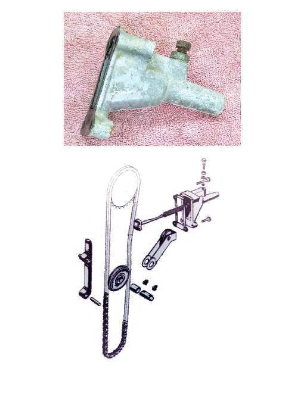
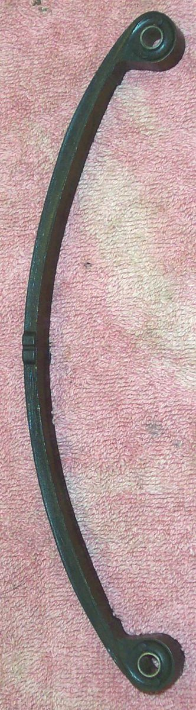
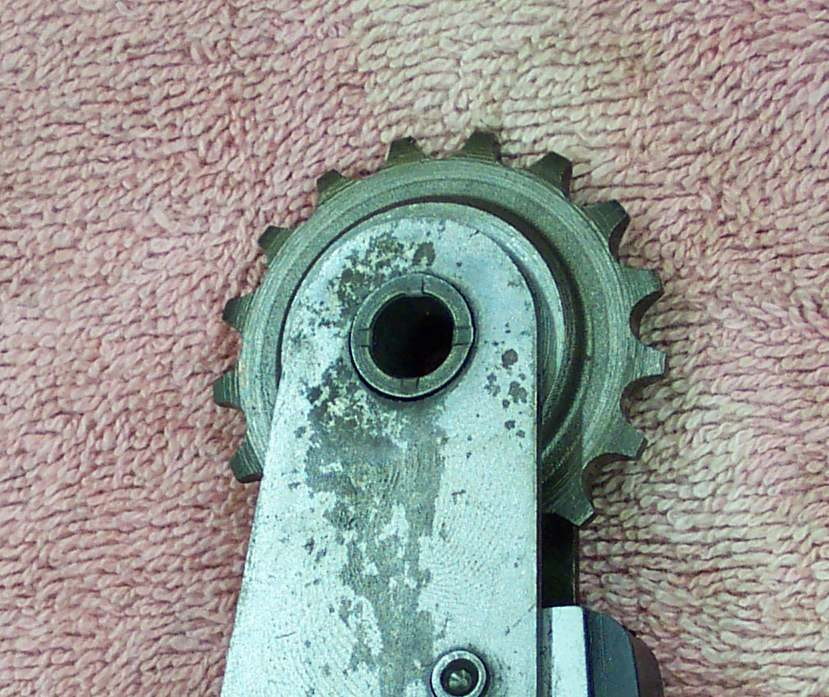

The tensioner is a spring-loaded plunger, mounted on the back or side of the cylinder, that presses a curved guide (slipper) against the cam chain. A second, fixed guide sits on the other side of the chain. Only overhead-cam engines have these parts; the pushrod K-Light 125 does not.
What it does
As the chain stretches, the tensioner moves out to take up the slack, so the chain stays quiet and the valve timing stays correct. Modern tensioners are automatic, using a spring and a ratchet, or oil pressure. Older ones have a locking bolt that must be released and locked by hand. Guides are plastic or rubber on metal and wear into grooves; pieces can break off into the oil.
Signs it is worn or failing
- Rattling from the cam chain area, often worst after a cold start.
- Rattle that comes back soon after the chain was adjusted or replaced.
- Bits of plastic or rubber in the oil strainer: Metal or particles in the oil.
When to replace it
When the tensioner plunger is at the end of its travel, the ratchet slips, or the guides are deeply grooved or cracked. Replace with a new chain if the chain is also worn. Follow your bike's manual.
What to match when buying
- Match engine code. Tensioners that look the same can have different plunger length or spring force.
- Check the type: automatic ratchet, oil-pressure, or manual-lock. Do not fit a manual one where an automatic one was fitted.
- Buy a new gasket for the tensioner body. Avoid guides with soft, rough plastic.
Fitting notes
- Workshop job: Check the cam chain and tensioner.
- Many automatic tensioners must be wound back and locked before fitting, then released. Releasing them the wrong way can over-tighten the chain.
- If the chain will not stay quiet after a correct tensioner fit, the chain is almost always worn out.
- Fit a tensioner in its loosest position, with no load on the chain, then release or set it. See your manual for the engine mark to use.